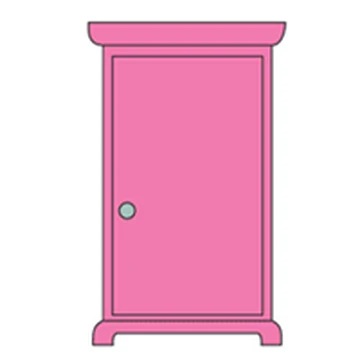

多拉A夢的任意門
還在為每天早上的塞車和擠捷運感到痛苦嗎？任意門是您通勤、旅遊的最佳解方。

商品規格與參數
【商品名稱】 實用型任意門（ver.2,147,483,647）
【商品售價】 面議（支援分期付款）
【移動範圍】 方圓十光年之內（超出範圍可能會讓你掉出世界）
使用說明書（請務必詳閱）
1. 握住門把時，請在腦海中清晰想像目的地。如果想像不夠專注，可能會開到不該去的地方。
2. 通過門時請勿奔跑推擠，以免身體的一部分留在原地。
3. 本產品不具備時間旅行功能，若開門後發現恐龍或是不該存在的實體，請立刻逃離並聯絡客服。